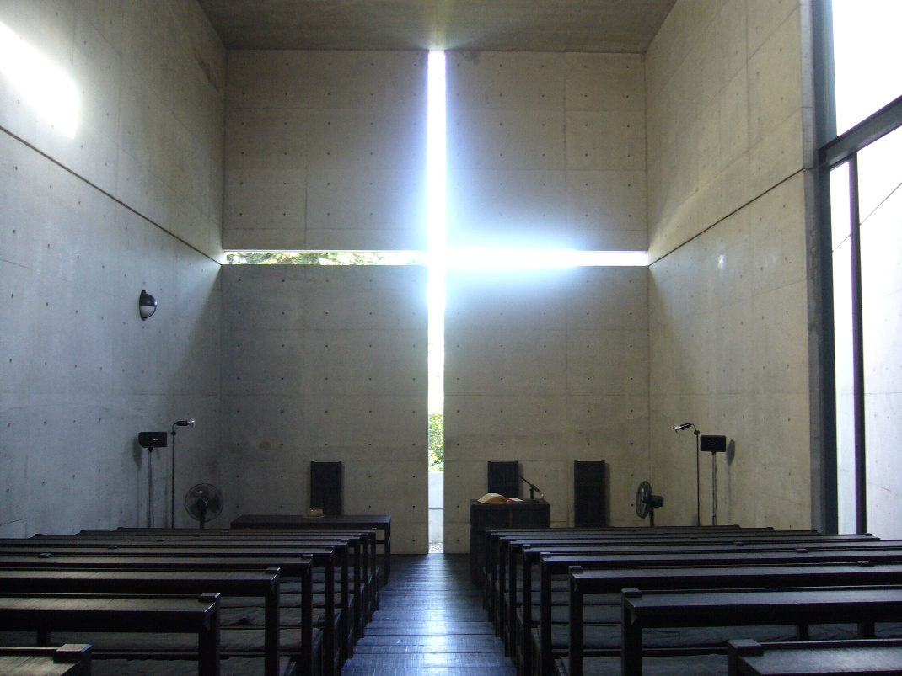
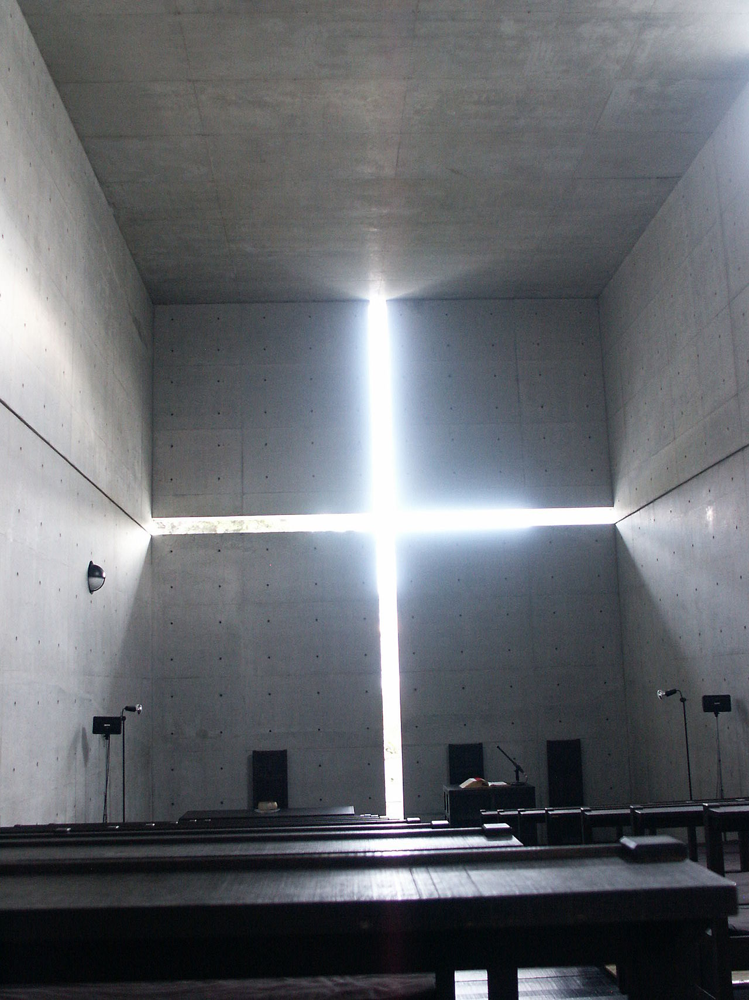
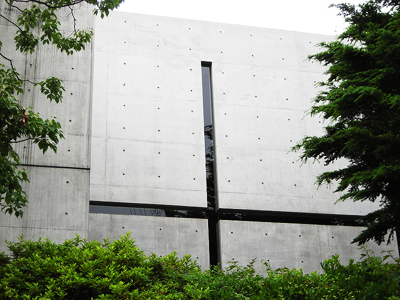
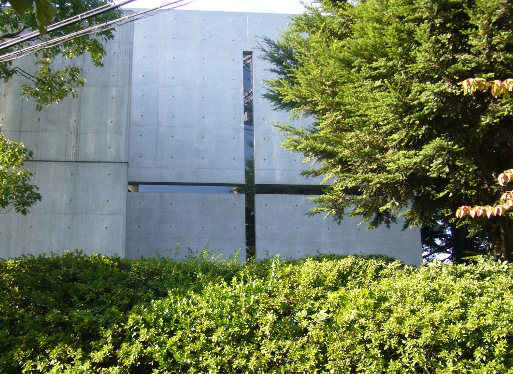
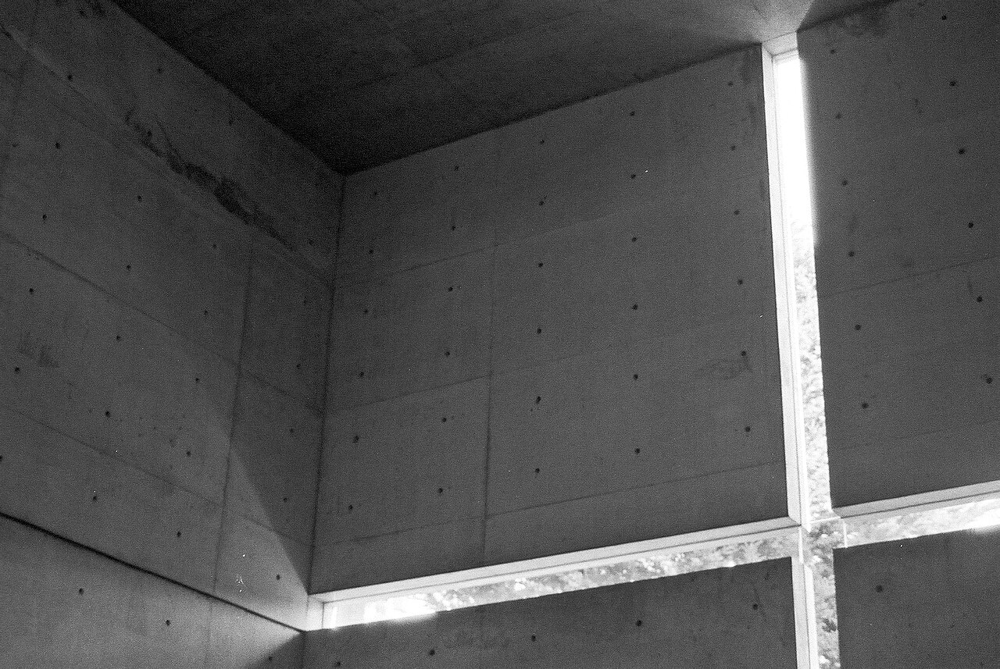
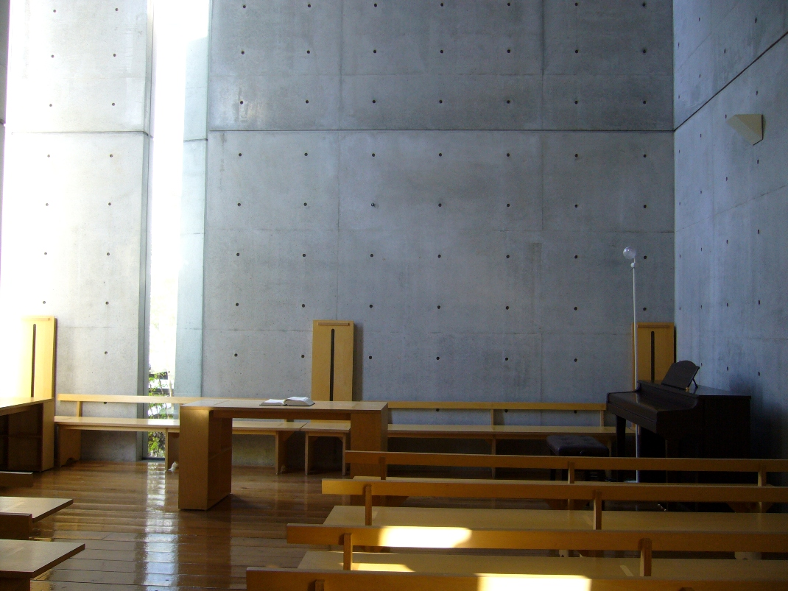

光之教堂（茨木春日丘教會），是日本建築大師安藤忠雄最具代表性的作品之一。 這座僅 113 平方公尺的小教堂，以極度克制的手法，達到了建築與精神性的極致融合。
整座建築最震撼人心的元素，是祭壇後方那道十字形切口。 清水混凝土厚重的牆體被精確地切割開來，自然光從窄縫中灑入昏暗的禮拜空間， 在地板和牆面上投射出一道神聖的光之十字架。光線隨著時間、季節、天氣不斷變化， 每一刻的教堂都是獨一無二的。

祭壇後方的十字形開口，自然光穿透混凝土形成光之十字架 · Photo: Wikimedia Commons CC
安藤忠雄最初的設計中，十字形切口是完全開放的——沒有玻璃， 讓風、雨、甚至雪都能自由進入教堂空間。這個極端的構想體現了他對建築與自然 共存的信念。然而最終因為實際使用的需求，不得不加裝了玻璃。
十字形開口從地面一直延伸到天花板，從左牆延伸到右牆。 這意味著整面祭壇牆在結構上被完全切斷——一個極為大膽的工程決策。 光線的強度和角度隨時間變化，清晨的光是溫暖的橘色，正午是純白的， 而夕陽時分則染上深沉的金紅色。
在黑暗中，光才有意義。建築的本質不是形態，而是封閉在其中的空間精神。
光之教堂的平面是一個簡單的長方形，被一面 15 度斜插的獨立牆體切割。 這面牆不僅定義了入口動線——訪客必須繞過它才能進入禮拜空間—— 也創造了一種從光到暗、再到光的戲劇性空間序列。


外觀同樣極度克制：沒有任何裝飾，沒有十字架標誌， 甚至沒有明顯的入口標示。只有光滑的灰色清水混凝土面板， 以及均勻排列的螺栓孔（安藤的標誌性元素）。 建築以沉默的姿態佇立在住宅區中，宛如一塊被精心雕刻的巨石。
教堂內部的長椅由未經處理的松木搭建在腳手架上—— 這同樣是預算限制下的創意解決方案。 地板由鋪設在泥土上的木板構成，走在上面會發出輕微的聲響， 提醒每一位進入者：這是一個需要放慢腳步、靜心感受的空間。


左：教堂空間概覽 · 右：1999年增建的主日學校（Sunday School） · Photos: Wikimedia Commons CC
茨木春日丘教會委託安藤忠雄設計新禮拜堂。教會預算極為有限，安藤幾乎以義務的方式接下這個專案。
光之教堂竣工。113m² 的小空間，以 3000 萬日圓的極低預算完成。十字形開口最終加裝玻璃。
普利茲克獎
安藤忠雄獲頒建築界最高榮譽——普利茲克建築獎。光之教堂被評審團特別提及為其代表作之一。
增建「主日學校」（Sunday School），同樣以清水混凝土建造，與原建築形成 L 形組合。
光之教堂作為現役教會持續使用。每週日舉行禮拜，平日接受預約參觀。被國際建築界公認為 20 世紀最重要的宗教建築之一。